Source & review coverageمنبع و پوشش مرور
Main text, appendices, figure and table source pages, and biblio graphy reviewed. Figure/table images retain exact original values. Only explicitly printed numerical results are trans cr i bed; plotted curves are not digitized. Project-role recommendations are separate reviewer judgments.متن، پیوستها، صفحات شکل و جدول و کتابنامه مرور شدهاند. تصاویر منبع مقادیر اصلی را حفظ میکنند. فقط اعداد صریح چاپشده ثبت و منحنیها تخمین زده نشدهاند. پیشنهاد نقش در پروژه، قضاوت مستقل مرورگر است.
Problem, objectives and scopeمسئله، اهداف و دامنه
Jia et al., Energy & Buildings 367 (2026),117763. STAR links sparse whole-building sensing, anomaly root-cause tracing and adaptive retrofit-roadmap optimization for medium office buildings. The explicit research gap is insufficient integration of these three capabilities in next-generation energy performance certification. No numbered hypothesis list is stated.Jia و همکاران، ۲۰۲۶. STAR ادراک کمحسگر، ریشهیابی ناهنجاری و بهینهسازی نقشه بازسازی را برای ساختمان اداری متوسط پیوند میدهد. شکاف صریح، ادغام ناکافی این سه قابلیت در گواهی عملکرد انرژی است؛ فرضیه شمارهگذاریشده ندارد. Source · PDF p. 1Source · PDF p. 4Source · PDF p. 5
Graph sensing, tracing and optimizationادراک گرافی، ریشهیابی و بهینهسازی
The heterogeneous graph has room/equipment/wall/sensor nodes and thermal/airflow/equipment/occupancy edges. The sensing engine combines explicit physics-informed graph attention and an implicit DTW-similarity graph, adaptive gating and Bi-LSTM. Similarity≥.7 creates implicit edges; weights update hourly and structure every 24 h using 30-day history. MSE plus physical loss uses λ=.3.گراف ناهمگن دارای گره اتاق/تجهیز/دیوار/حسگر و یال حرارتی/هوا/تجهیز/حضور است. توجه گرافی فیزیکی و گراف ضمنی DTW با دروازه تطبیقی و Bi-LSTM ترکیب میشوند. شباهت≥۰٫۷ یال میسازد؛ وزن ساعتی و ساختار روزانه با سابقه۳۰روزه بهروز میشود. ضریب زیان فیزیکی۰٫۳ است. Source · PDF p. 5Source · PDF p. 7
Reverse random walks propagate from anomalous sensors upstream. Contribution Ci mixes visit probability with edge-weighted anomaly intensity (α=.6); top 3 nodes form a structured diagnosis. Retrofit exploration uses PPO and add/replace/remove actions on a measure compatibility/conflict graph; a lightweight Twin validates schemes. Thresholds include saving≥10%, ROI≥5%, compliance 1 and at least medium feasibility, followed by top 30% selection. These agents are an RL explorer and simulator validator, not demonstrated LLM agents.راهپیمایی معکوس از حسگر ناهنجار به بالادست میرود. سهم گره با α=۰٫۶ از احتمال بازدید و شدت ناهنجاری ساخته و سه گره برتر گزارش میشوند. عامل اکتشاف PPO روی گراف سازگاری بازسازی عمل میکند؛ Twin سبک اعتبارسنج است. آستانه صرفهجویی۱۰٪، ROI پنج٪ و انتخاب۳۰٪ برتر به کار میرود. این عاملها مدل زبانی نیستند. Source · PDF p. 8Source · PDF p. 9Source · PDF p. 10
Datasets, masks and validation tasksدادهها، ماسکها و اعتبارسنجی
Experiments combine three ASHRAE GEP III office cases (8000/10000/12000 m²) and a 12000 m² real office with sparse temperature/humidity and meter coverage. Random masking uses 20/40/60/80% missingness. Inputs include BIM, weather, occupancy and measurements aggregated hourly. Ten independent runs assess 60% missingness. Further tests cover seven anomaly types, severity/composite/gradual faults, transferred scenarios, RP-1043 device fault data and simulator agreement with EnergyPlus.سه مورد اداری ASHRAE GEP III و یک دفتر واقعی۱۲۰۰۰مترمربعی، با ماسک تصادفی۲۰/۴۰/۶۰/۸۰٪ بررسی میشوند. BIM، آبوهوا، حضور و داده ساعتی ورودیاند. ده اجرای مستقل در۶۰٪ فقدان و آزمون نوع/شدت/ترکیب خطا، انتقال، RP-1043 و توافق شبیهساز با EnergyPlus وجود دارد. Source · PDF p. 11Source · PDF p. 12Source · PDF p. 14Source · PDF p. 17Source · PDF p. 18Source · PDF p. 19
Com para tors include LSTM/CNN for sensing, STGCN/GAT/PINN for graph prediction/diagnosis, and NSGA-III/MOPSO/single-agent PPO for optimization. Seven update rounds are offline historical-data replay, not deployed retrofits or longitudinal post-intervention measurements.مقایسهها شامل LSTM/CNN در ادراک، STGCN/GAT/PINN در پیشبینی و تشخیص و NSGA-III/MOPSO/PPO تکعامل در بهینهسازیاند. هفت دور بهروزرسانی، بازپخش آفلاین داده تاریخی است و بازسازی واقعی یا اندازهگیری بلندمدت پس از مداخله نیست. Source · PDF p. 14Source · PDF p. 18Source · PDF p. 19Source · PDF p. 20Source · PDF p. 22Source · PDF p. 23
Reported sensing, diagnosis and roadmap resultsنتایج ادراک، تشخیص و نقشه بازسازی
Under 60% missingness STAR reports MAPE 6.5%, R².92; diagnosis F 1>.88 over seven anomaly types, hidden-anomaly recall 92% and mean diagnosis time.8 s. Optimization reports Pareto coverage.93, typical energy saving 22%, payback 3.2 years, and feasible solution ratio 92%. After seven replay rounds sensing MAPE reaches 5.2% and optimized ROI 10.2%.در۶۰٪ فقدان، MAPE برابر۶٫۵٪ و R² برابر۰٫۹۲؛ F1 تشخیص بیش از۰٫۸۸، بازیابی ناهنجاری پنهان۹۲٪ و زمان میانگین۰٫۸ثانیه گزارش میشود. پوشش پارتو۰٫۹۳، صرفهجویی نمونه۲۲٪، بازگشت۳٫۲سال و نسبت راهحل مجاز۹۲٪ است. پس از هفت دور بازپخش MAPE به۵٫۲٪ و ROI به۱۰٫۲٪ میرسد. Source · PDF p. 1Source · PDF p. 16Source · PDF p. 18Source · PDF p. 19Source · PDF p. 22Source · PDF p. 23
Author-stated limitations and extensionsمحدودیتها و توسعههای نویسندگان
Limitations include dependence on weeks of historical data, O(N²F) campus scaling, incomplete electromechanical control logic, no physical retrofit deployment, and omission of execution delays, measurement noise and changing occupants from replay. RP-1043 uses a degenerate single-node graph and yields lower F 1 than building-level synthetic anomalies. Future work includes transfer/meta-learning, hierarchical optimization and mechanism libraries.وابستگی به چند هفته تاریخچه، پیچیدگی O(N²F)، منطق کنترلی ناقص، نبود بازسازی فیزیکی و حذف تأخیر اجرا/نویز/تغییر رفتار از بازپخش محدودیتاند. RP-1043 گراف تکگرهی دارد و F1 آن از ناهنجاری مصنوعی کمتر است. انتقال، فرایادگیری و بهینهسازی سلسلهمراتبی پیشنهاد میشوند. Source · PDF p. 22Source · PDF p. 23
Key reported resultsنتایج کلیدی گزارششده
Reported: MAPE 6.5% at 60% missingness; diagnosis.8 s; typical saving 22%; replay MAPE 5.2%.گزارششده: MAPE۶٫۵٪ در فقدان۶۰٪، تشخیص۰٫۸ثانیه، صرفهجویی نمونه۲۲٪ و MAPE بازپخش۵٫۲٪. Source · PDF p. 1Source · PDF p. 23
Figures, captions & extracted evidenceشکلها، عنوانها و شواهد استخراجشده
Figure 1
Comparison & resultsمقایسه و نتایج
How to read this figureراهنمای خواندن شکل
Check the axes, units, panel labels and the caption’s definition of better performance. Compare methods under the stated conditions; keep uncertainty, tradeoffs and normalization separate from headline gains.محور، واحد، پنل و تعریف عملکرد بهتر در عنوان را بررسی کنید. روشها را در شرایط بیانشده مقایسه و عدمقطعیت، مصالحه و نرمالسازی را از بهبود شاخص اصلی جدا نگه دارید.
Reader guidance · not an additional author claimراهنمای مطالعه · ادعای اضافی نویسنده نیستWhat this figure showsاین شکل چه نشان میدهد؟
The physics-informed dual-channel sensing architecture fuses explicit physical and implicit learned graph features.معماری ادراک دوکاناله،ویژگی گراف فیزیکی و ضمنی راادغام میکند.
Reported values & evidence limitsمقادیر گزارششده و حدود شواهد
Gating/Bi-LSTM architecture is a model diagram, not an ablation result.دروازه/Bi-LSTMمعماری مدل است،نه نتیجه حذف مؤلفه.
Figure 2
Time & behaviorزمان و رفتار
How to read this figureراهنمای خواندن شکل
Read the time window and units before comparing traces. Match each curve to its legend and the same operating conditions; unlabeled samples are not numerical measurements extracted by this report.پیش از مقایسه مسیرها، بازه زمان و واحدها را بخوانید. هر منحنی را به راهنما و شرایط یکسان وصل کنید؛ نمونه بدون برچسب، اندازهگیری عددی استخراجشده در این گزارش نیست.
Reader guidance · not an additional author claimراهنمای مطالعه · ادعای اضافی نویسنده نیستWhat this figure showsاین شکل چه نشان میدهد؟
Rooms, equipment, walls and sensors become a dynamic heterogeneous graph with physical and implicit links.اتاق،تجهیز،دیواروحسگرگراف ناهمگن پویا باپیوندفیزیکی/ضمنی میسازند.
Reported values & evidence limitsمقادیر گزارششده و حدود شواهد
Text specifies DTW edge threshold.7, hourly weights and daily reconstruction.متن آستانهDTWبرابر۰٫۷،وزن ساعتی وبازسازی روزانه رادارد.
Figure 3
Probabilistic evidenceشواهد احتمالاتی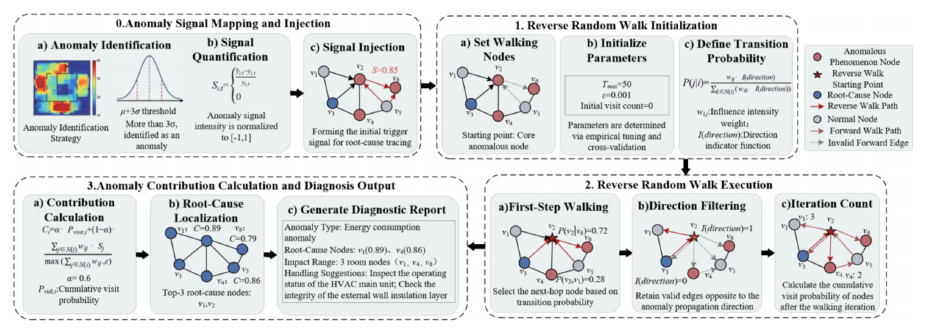
How to read this figureراهنمای خواندن شکل
Compare the hypotheses using the legend and the displayed cases. A posterior is the model’s belief; assess it alongside the reported diagnostic outcomes, rather than treating confidence alone as correctness.فرضیهها را با راهنمای رنگ و حالتهای نمایشدادهشده مقایسه کنید. پسین باور مدل است؛ آن را همراه نتیجه تشخیص بسنجید و اطمینان را بهتنهایی معادل صحت نگیرید.
Reader guidance · not an additional author claimراهنمای مطالعه · ادعای اضافی نویسنده نیستWhat this figure showsاین شکل چه نشان میدهد؟
Reverse-walk anomaly tracing moves from anomalous sensor evidence toward upstream candidates.ریشهیابی معکوس ازشاهد حسگر ناهنجار به نامزد بالادست حرکت میکند.
Reported values & evidence limitsمقادیر گزارششده و حدود شواهد
Visit/edge/intensity contributions rank root candidates; no joint posterior is printed.سهم بازدید/یال/شدت نامزدرا رتبهبندی میکند؛پسین مشترک چاپ نشده است.
Figure 4
Mechanism & workflowسازوکار و گردش کار
How to read this figureراهنمای خواندن شکل
Trace the inputs, processing stages and outputs, then look for feedback or validation paths. Use the accompanying explanation to distinguish the proposed design from components actually tested in the paper.ورودی، مرحله پردازش و خروجی را دنبال و مسیر بازخورد یا اعتبارسنجی را پیدا کنید. با توضیح همراه، طراحی پیشنهادی را از مؤلفه واقعاً آزمودهشده جدا کنید.
Reader guidance · not an additional author claimراهنمای مطالعه · ادعای اضافی نویسنده نیستWhat this figure showsاین شکل چه نشان میدهد؟
A directed example overlays reverse paths and candidate root contributions on system topology.مثال جهتدار مسیرمعکوس وسهم ریشه نامزد را برتوپولوژی نمایش میدهد.
Reported values & evidence limitsمقادیر گزارششده و حدود شواهد
Top 3 selection follows contribution ordering; illustrative path strengths are not our SCM probabilities.سهبرتر با رتبه سهم انتخاب میشوند؛قدرت مسیرنمونه احتمالSCMمانیست.
Figure 5
Synthesis & contextترکیب شواهد و زمینه
How to read this figureراهنمای خواندن شکل
Read this as an organization of concepts, dates or literature evidence. Categories and proposed directions should not be interpreted as experimental proof of a new controller or diagnostic method.این تصویر سازماندهی مفهومها، تاریخها یا شواهد منابع است. دستهها و جهتهای پیشنهادی را اثبات آزمایشی کنترلگر یا روش تشخیصی جدید تلقی نکنید.
Reader guidance · not an additional author claimراهنمای مطالعه · ادعای اضافی نویسنده نیستWhat this figure showsاین شکل چه نشان میدهد؟
PPO exploration exchanges candidate retrofit schemes with a lightweight Twin validator and shared archive.اکتشافPPOبرنامه بازسازی رابااعتبارسنجTwinسبک وحافظه مشترک مبادله میکند.
Reported values & evidence limitsمقادیر گزارششده و حدود شواهد
This is RL/simulator dual agency; not evidence for LLM-agent topology superiority.این دو عاملRL/شبیهسازند؛برتری توپولوژیLLMرا نشان نمیدهد.
Figure 6
Source visualتصویر منبع
How to read this figureراهنمای خواندن شکل
Read the original labels and caption first, then use the explanation and evidence note below. Printed quantities are preserved separately from reviewer interpretation.ابتدا برچسبها و عنوان اصلی را بخوانید و سپس توضیح و یادداشت شاهد را بررسی کنید. مقدار چاپشده از تفسیر مرورگر جدا نگه داشته شده است.
Reader guidance · not an additional author claimراهنمای مطالعه · ادعای اضافی نویسنده نیستWhat this figure showsاین شکل چه نشان میدهد؟
Sensor, meter, weather and occupancy collection locations establish sparse real-office coverage.مکان حسگر،کنتور،آبوهواوحضورپوشش کمتراکم دفتررا مشخص میکند.
Reported values & evidence limitsمقادیر گزارششده و حدود شواهد
Real case 12000 m²with 24 temperature/humidity sensors and 12 submeters(Table 3).موردواقعی۱۲۰۰۰مترمربع،۲۴حسگردما/رطوبت و۱۲زیرکنتور دارد.
Figure 7
Mechanism & workflowسازوکار و گردش کار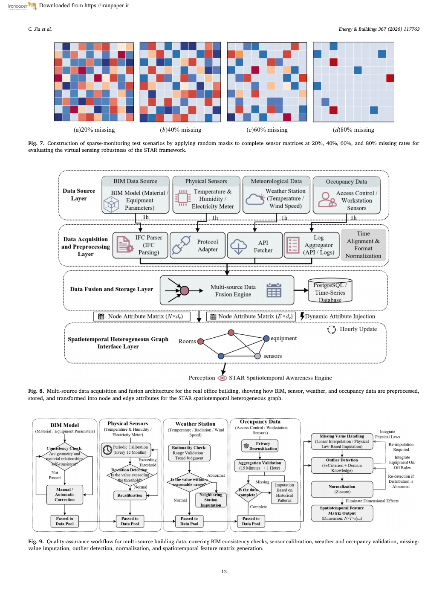
How to read this figureراهنمای خواندن شکل
Trace the inputs, processing stages and outputs, then look for feedback or validation paths. Use the accompanying explanation to distinguish the proposed design from components actually tested in the paper.ورودی، مرحله پردازش و خروجی را دنبال و مسیر بازخورد یا اعتبارسنجی را پیدا کنید. با توضیح همراه، طراحی پیشنهادی را از مؤلفه واقعاً آزمودهشده جدا کنید.
Reader guidance · not an additional author claimراهنمای مطالعه · ادعای اضافی نویسنده نیستWhat this figure showsاین شکل چه نشان میدهد؟
Random masks define sparse-monitoring reconstruction scenarios from complete matrices.ماسک تصادفی سناریوی بازسازی نظارت ناقص از ماتریس کامل میسازد.
Reported values & evidence limitsمقادیر گزارششده و حدود شواهد
Missing rates 20%,40%,60%,80%are experimental settings, not measured outage rates.فقدان۲۰/۴۰/۶۰/۸۰٪تنظیم آزمایش است،نه نرخ قطعی واقعی.
Figure 8
Calibration & selective riskکالیبراسیون و ریسک انتخابیHow to read this figureراهنمای خواندن شکل
Check what the probability or confidence represents, which examples are retained, and the calibration split. A reliable pooled score does not guarantee reliable decisions in every domain or a safe action at a particular step.معنای احتمال یا اطمینان، نمونههای نگهداشتهشده و تقسیم کالیبراسیون را بررسی کنید. نمره تجمیعی مناسب، تصمیم معتبر در همه دامنهها یا ایمنی اقدام خاص را تضمین نمیکند.
Reader guidance · not an additional author claimراهنمای مطالعه · ادعای اضافی نویسنده نیستWhat this figure showsاین شکل چه نشان میدهد؟
BIM, sensor, weather and occupancy streams are aligned into graph attributes through a database pipeline.BIM،حسگر،هواوحضوردرخط پایگاهداده به ویژگی گراف همتراز میشوند.
Reported values & evidence limitsمقادیر گزارششده و حدود شواهد
Hourly aggregation is described; diagram does not establish real-time field reliability.تجمیع ساعتی توصیف شده؛نمودارپایداری میدانی بلادرنگ رااثبات نمیکند.
Figure 9
Calibration & selective riskکالیبراسیون و ریسک انتخابی
How to read this figureراهنمای خواندن شکل
Check what the probability or confidence represents, which examples are retained, and the calibration split. A reliable pooled score does not guarantee reliable decisions in every domain or a safe action at a particular step.معنای احتمال یا اطمینان، نمونههای نگهداشتهشده و تقسیم کالیبراسیون را بررسی کنید. نمره تجمیعی مناسب، تصمیم معتبر در همه دامنهها یا ایمنی اقدام خاص را تضمین نمیکند.
Reader guidance · not an additional author claimراهنمای مطالعه · ادعای اضافی نویسنده نیستWhat this figure showsاین شکل چه نشان میدهد؟
Quality assurance checks BIM consistency, calibration, missingness, outliers and normalization.کنترل کیفیت سازگاریBIM،کالیبراسیون،فقدان،داده پرت ونرمالسازی را بررسی میکند.
Reported values & evidence limitsمقادیر گزارششده و حدود شواهد
Text reports annual calibration,3σ+domain outlier checks and Z-score normalization.متن کالیبراسیون سالانه،کنترل پرت3σبا دانش دامنه وZ-scoreراگزارش میکند.
Figure 10
Mechanism & workflowسازوکار و گردش کار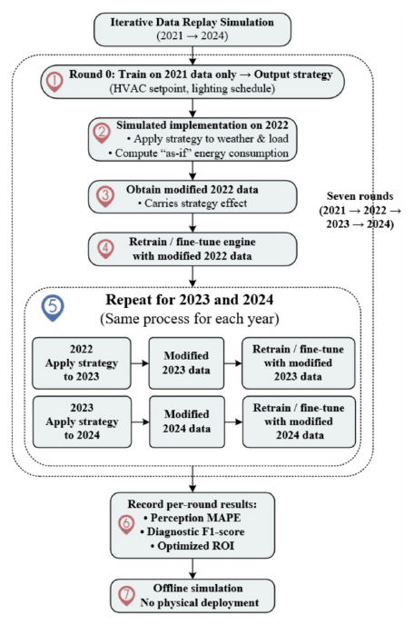
How to read this figureراهنمای خواندن شکل
Trace the inputs, processing stages and outputs, then look for feedback or validation paths. Use the accompanying explanation to distinguish the proposed design from components actually tested in the paper.ورودی، مرحله پردازش و خروجی را دنبال و مسیر بازخورد یا اعتبارسنجی را پیدا کنید. با توضیح همراه، طراحی پیشنهادی را از مؤلفه واقعاً آزمودهشده جدا کنید.
Reader guidance · not an additional author claimراهنمای مطالعه · ادعای اضافی نویسنده نیستWhat this figure showsاین شکل چه نشان میدهد؟
Offline replay adds historical batches and repeats model/strategy updates.بازپخش آفلاین دسته تاریخی میافزاید ومدل/راهبردرابهروزمیکند.
Reported values & evidence limitsمقادیر گزارششده و حدود شواهد
Seven iterations are replay simulation, not seven installed retrofit interventions.هفت تکرار شبیهسازی بازپخش است،نه هفت مداخله نصبشده.
Figure 11
Comparison & resultsمقایسه و نتایج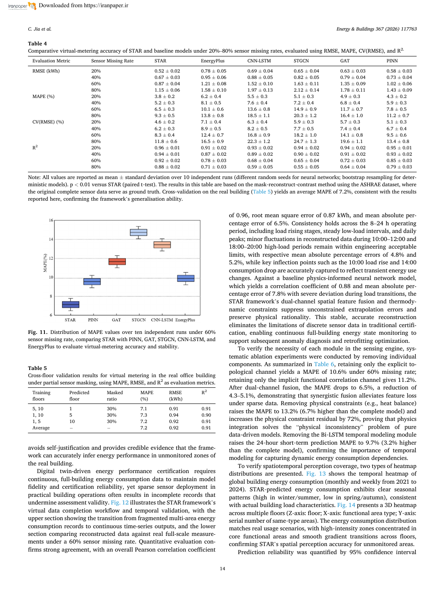
How to read this figureراهنمای خواندن شکل
Check the axes, units, panel labels and the caption’s definition of better performance. Compare methods under the stated conditions; keep uncertainty, tradeoffs and normalization separate from headline gains.محور، واحد، پنل و تعریف عملکرد بهتر در عنوان را بررسی کنید. روشها را در شرایط بیانشده مقایسه و عدمقطعیت، مصالحه و نرمالسازی را از بهبود شاخص اصلی جدا نگه دارید.
Reader guidance · not an additional author claimراهنمای مطالعه · ادعای اضافی نویسنده نیستWhat this figure showsاین شکل چه نشان میدهد؟
Ten-run MAPE distributions compare sensing stability under 60%missingness.توزیعMAPEدهاجراپایداری ادراک درفقدان۶۰٪رامقایسه میکند.
Reported values & evidence limitsمقادیر گزارششده و حدود شواهد
Reported STAR mean MAPE 6.5%; uncertainty must use printed values only.میانگینMAPEگزارششده۶٫۵٪است؛عدمقطعیت فقط ازعددچاپشده.
Figure 12
Source visualتصویر منبع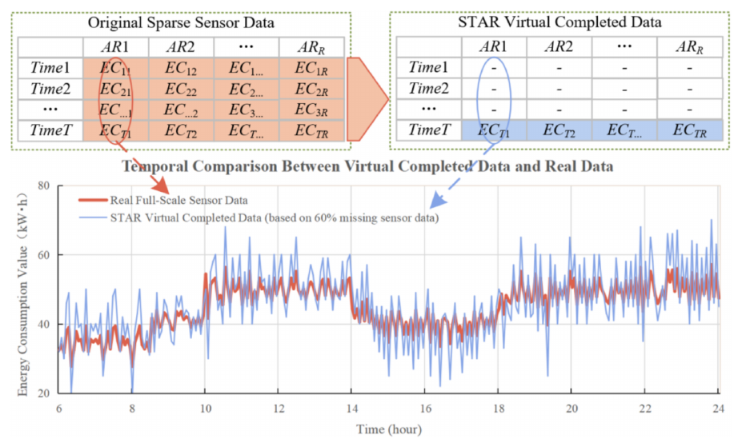
How to read this figureراهنمای خواندن شکل
Read the original labels and caption first, then use the explanation and evidence note below. Printed quantities are preserved separately from reviewer interpretation.ابتدا برچسبها و عنوان اصلی را بخوانید و سپس توضیح و یادداشت شاهد را بررسی کنید. مقدار چاپشده از تفسیر مرورگر جدا نگه داشته شده است.
Reader guidance · not an additional author claimراهنمای مطالعه · ادعای اضافی نویسنده نیستWhat this figure showsاین شکل چه نشان میدهد؟
Virtual sensor reconstruction is checked against withheld full-scale real sensor records.بازسازی حسگر مجازی با رکوردواقعی کامل کنارگذاشتهشده بررسی میشود.
Reported values & evidence limitsمقادیر گزارششده و حدود شواهد
Curves are retained as source evidence; no individual temporal samples are estimated.منحنی بهصورت منبعحفظ شده؛نمونه زمانی منفرد تخمین زده نشده.
Figure 13
Comparison & resultsمقایسه و نتایج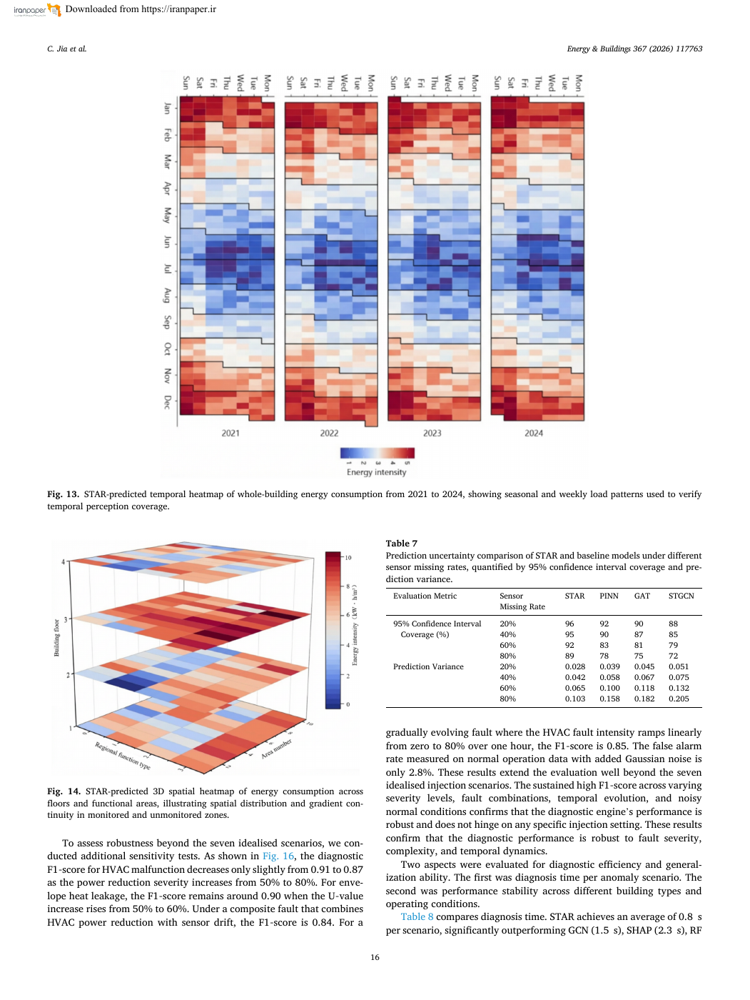
How to read this figureراهنمای خواندن شکل
Check the axes, units, panel labels and the caption’s definition of better performance. Compare methods under the stated conditions; keep uncertainty, tradeoffs and normalization separate from headline gains.محور، واحد، پنل و تعریف عملکرد بهتر در عنوان را بررسی کنید. روشها را در شرایط بیانشده مقایسه و عدمقطعیت، مصالحه و نرمالسازی را از بهبود شاخص اصلی جدا نگه دارید.
Reader guidance · not an additional author claimراهنمای مطالعه · ادعای اضافی نویسنده نیستWhat this figure showsاین شکل چه نشان میدهد؟
A predicted 2021–2024 whole-building heatmap displays seasonal/weekly patterns.نقشه پیشبینی۲۰۲۱–۲۰۲۴الگوی فصلی/هفتگی کل ساختمان رانشان میدهد.
Reported values & evidence limitsمقادیر گزارششده و حدود شواهد
This is model-predicted energy distribution, not observed causal intervention benefit.این توزیع پیشبینی مدل است،نه منفعت مداخله علّی مشاهدهشده.
Figure 14
Comparison & resultsمقایسه و نتایج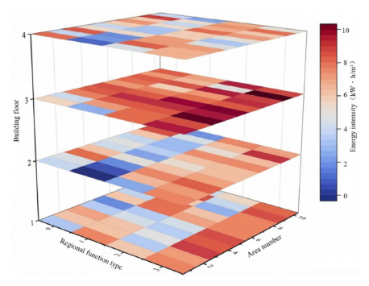
How to read this figureراهنمای خواندن شکل
Check the axes, units, panel labels and the caption’s definition of better performance. Compare methods under the stated conditions; keep uncertainty, tradeoffs and normalization separate from headline gains.محور، واحد، پنل و تعریف عملکرد بهتر در عنوان را بررسی کنید. روشها را در شرایط بیانشده مقایسه و عدمقطعیت، مصالحه و نرمالسازی را از بهبود شاخص اصلی جدا نگه دارید.
Reader guidance · not an additional author claimراهنمای مطالعه · ادعای اضافی نویسنده نیستWhat this figure showsاین شکل چه نشان میدهد؟
Spatial 3 Denergy mapping displays predicted variation across office zones/floors.نقشه سهبعدی انرژی تغییرپیشبینیشده ناحیه/طبقه رانمایش میدهد.
Reported values & evidence limitsمقادیر گزارششده و حدود شواهد
Color differences are not converted into unprinted per-zone energy estimates.تفاوت رنگ به تخمین انرژی ناحیهای چاپنشده تبدیل نشده است.
Figure 15
Comparison & resultsمقایسه و نتایج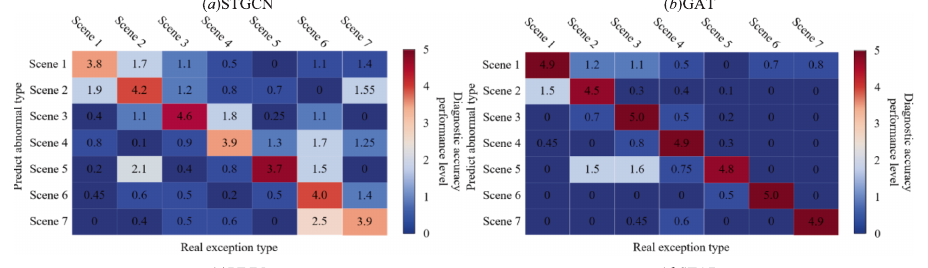
How to read this figureراهنمای خواندن شکل
Check the axes, units, panel labels and the caption’s definition of better performance. Compare methods under the stated conditions; keep uncertainty, tradeoffs and normalization separate from headline gains.محور، واحد، پنل و تعریف عملکرد بهتر در عنوان را بررسی کنید. روشها را در شرایط بیانشده مقایسه و عدمقطعیت، مصالحه و نرمالسازی را از بهبود شاخص اصلی جدا نگه دارید.
Reader guidance · not an additional author claimراهنمای مطالعه · ادعای اضافی نویسنده نیستWhat this figure showsاین شکل چه نشان میدهد؟
Confusion matrices compare STGCN, GAT, PINN and STAR across seven anomaly scenarios.ماتریس درهمریختگی STGCN،GAT،PINNوSTARراهفت سناریوناهنجاری مقایسه میکند.
Reported values & evidence limitsمقادیر گزارششده و حدود شواهد
Text reports STAR F 1>.88 and hidden-anomaly recall 92%; source cells retained.متنF1بیشاز۰٫۸۸وبازیابی ناهنجاری پنهان۹۲٪راگزارش میکند؛سلول اصلی حفظ شده.
Figure 16
Comparison & resultsمقایسه و نتایج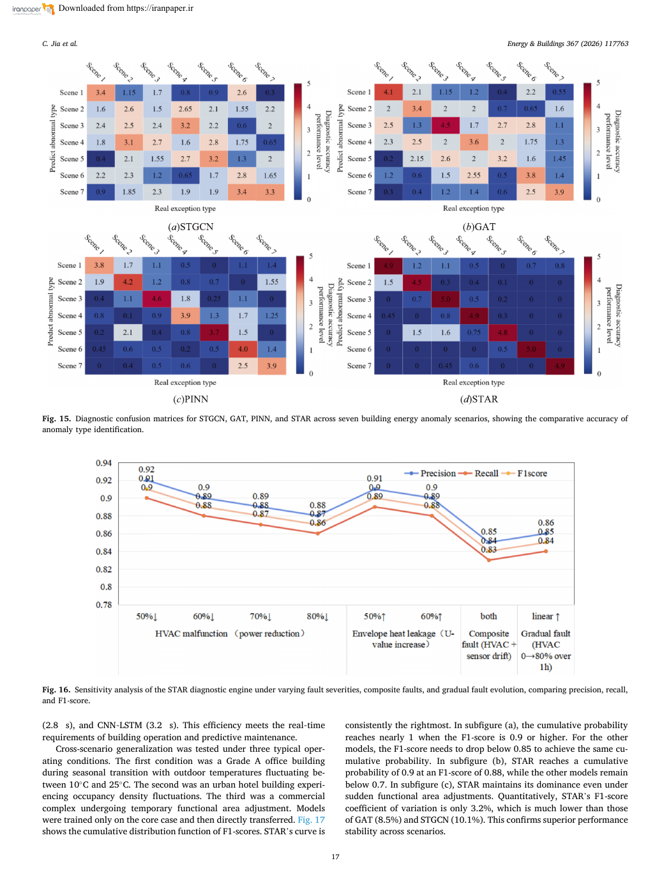
How to read this figureراهنمای خواندن شکل
Check the axes, units, panel labels and the caption’s definition of better performance. Compare methods under the stated conditions; keep uncertainty, tradeoffs and normalization separate from headline gains.محور، واحد، پنل و تعریف عملکرد بهتر در عنوان را بررسی کنید. روشها را در شرایط بیانشده مقایسه و عدمقطعیت، مصالحه و نرمالسازی را از بهبود شاخص اصلی جدا نگه دارید.
Reader guidance · not an additional author claimراهنمای مطالعه · ادعای اضافی نویسنده نیستWhat this figure showsاین شکل چه نشان میدهد؟
Diagnosis sensitivity varies severity, composite faults and gradual evolution.حساسیت تشخیص شدت،ترکیب خطا وتکامل تدریجی راتغییرمیدهد.
Reported values & evidence limitsمقادیر گزارششده و حدود شواهد
Precision/recall/F 1 curves remain original; no interpolation or digitization.منحنی دقت/بازیابی/F1اصلی است؛درونیابی وتخمین نشده.
Figure 17
Comparison & resultsمقایسه و نتایج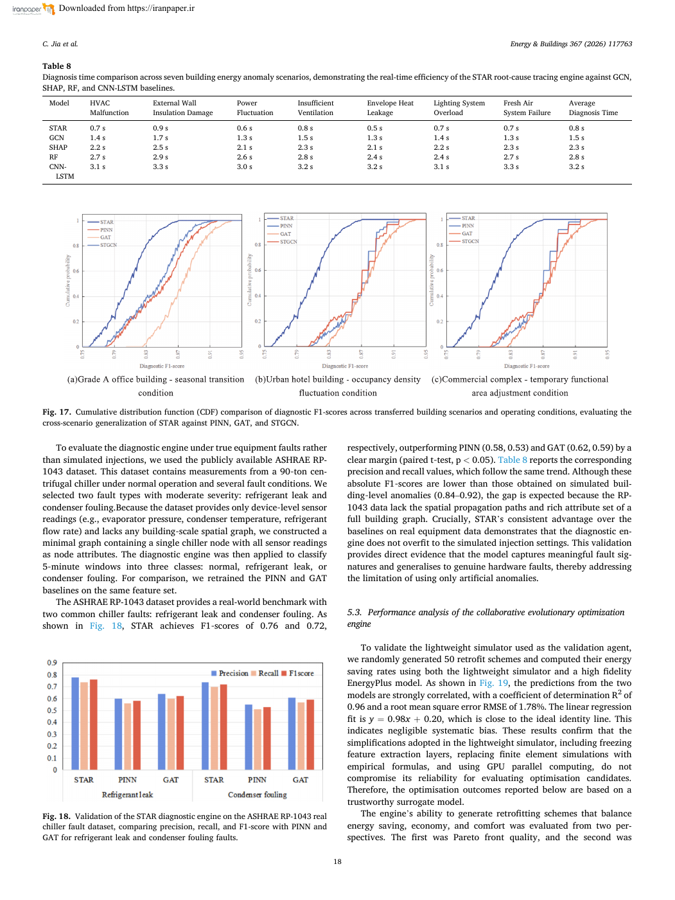
How to read this figureراهنمای خواندن شکل
Check the axes, units, panel labels and the caption’s definition of better performance. Compare methods under the stated conditions; keep uncertainty, tradeoffs and normalization separate from headline gains.محور، واحد، پنل و تعریف عملکرد بهتر در عنوان را بررسی کنید. روشها را در شرایط بیانشده مقایسه و عدمقطعیت، مصالحه و نرمالسازی را از بهبود شاخص اصلی جدا نگه دارید.
Reader guidance · not an additional author claimراهنمای مطالعه · ادعای اضافی نویسنده نیستWhat this figure showsاین شکل چه نشان میدهد؟
F 1 CDFs assess transferred building/operating scenarios.CDFامتیازF1انتقال میان ساختمان/شرایط رامیسنجد.
Reported values & evidence limitsمقادیر گزارششده و حدود شواهد
Transfer-distribution curves are not calibration curves for cause posteriors.منحنی توزیع انتقال،کالیبراسیون پسین علت نیست.
Figure 18
Comparison & resultsمقایسه و نتایجHow to read this figureراهنمای خواندن شکل
Check the axes, units, panel labels and the caption’s definition of better performance. Compare methods under the stated conditions; keep uncertainty, tradeoffs and normalization separate from headline gains.محور، واحد، پنل و تعریف عملکرد بهتر در عنوان را بررسی کنید. روشها را در شرایط بیانشده مقایسه و عدمقطعیت، مصالحه و نرمالسازی را از بهبود شاخص اصلی جدا نگه دارید.
Reader guidance · not an additional author claimراهنمای مطالعه · ادعای اضافی نویسنده نیستWhat this figure showsاین شکل چه نشان میدهد؟
RP-1043 real device fault data tests beyond building-level simulated anomalies.داده خطای واقعیRP-1043آزمون فراتر ازناهنجاری شبیهسازی ساختمان است.
Reported values & evidence limitsمقادیر گزارششده و حدود شواهد
Authors report lower F 1 and a degenerate single-node graph for this device dataset.نویسندگانF1کمتر وگراف تکگرهی برای این داده دستگاه گزارش میکنند.
Figure 19
Comparison & resultsمقایسه و نتایج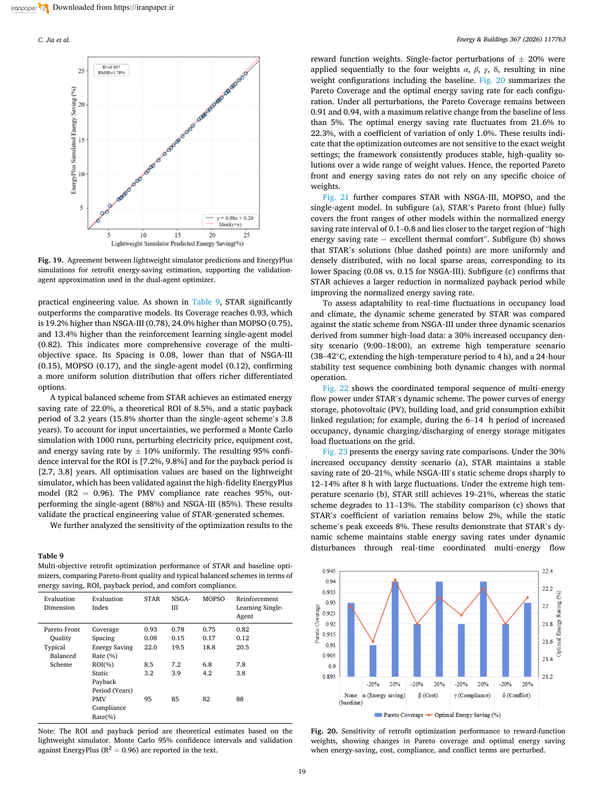
How to read this figureراهنمای خواندن شکل
Check the axes, units, panel labels and the caption’s definition of better performance. Compare methods under the stated conditions; keep uncertainty, tradeoffs and normalization separate from headline gains.محور، واحد، پنل و تعریف عملکرد بهتر در عنوان را بررسی کنید. روشها را در شرایط بیانشده مقایسه و عدمقطعیت، مصالحه و نرمالسازی را از بهبود شاخص اصلی جدا نگه دارید.
Reader guidance · not an additional author claimراهنمای مطالعه · ادعای اضافی نویسنده نیستWhat this figure showsاین شکل چه نشان میدهد؟
Lightweight Twin predictions are compared with EnergyPlus evaluation outcomes.پیشبینیTwinسبک باارزیابیEnergyPlusمقایسه میشود.
Reported values & evidence limitsمقادیر گزارششده و حدود شواهد
Agreement between two models does not independently verify physical retrofit recovery.توافق دو مدل،بازیابی بازسازی فیزیکی را مستقلاًتأیید نمیکند.
Figure 20
Comparison & resultsمقایسه و نتایج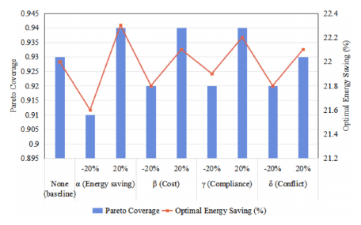
How to read this figureراهنمای خواندن شکل
Check the axes, units, panel labels and the caption’s definition of better performance. Compare methods under the stated conditions; keep uncertainty, tradeoffs and normalization separate from headline gains.محور، واحد، پنل و تعریف عملکرد بهتر در عنوان را بررسی کنید. روشها را در شرایط بیانشده مقایسه و عدمقطعیت، مصالحه و نرمالسازی را از بهبود شاخص اصلی جدا نگه دارید.
Reader guidance · not an additional author claimراهنمای مطالعه · ادعای اضافی نویسنده نیستWhat this figure showsاین شکل چه نشان میدهد؟
Reward-weight sensitivity examines optimization outcomes under changed objectives.حساسیت وزن پاداش،نتیجه بهینهسازی باتغییرهدف رامیسنجد.
Reported values & evidence limitsمقادیر گزارششده و حدود شواهد
Weights affect saving/cost/compliance tradeoffs; do not assume a universal weighting.وزن مصالحه صرفهجویی/هزینه/انطباق را تغییرمیدهد؛وزن عمومی فرض نشود.
Figure 21
Comparison & resultsمقایسه و نتایج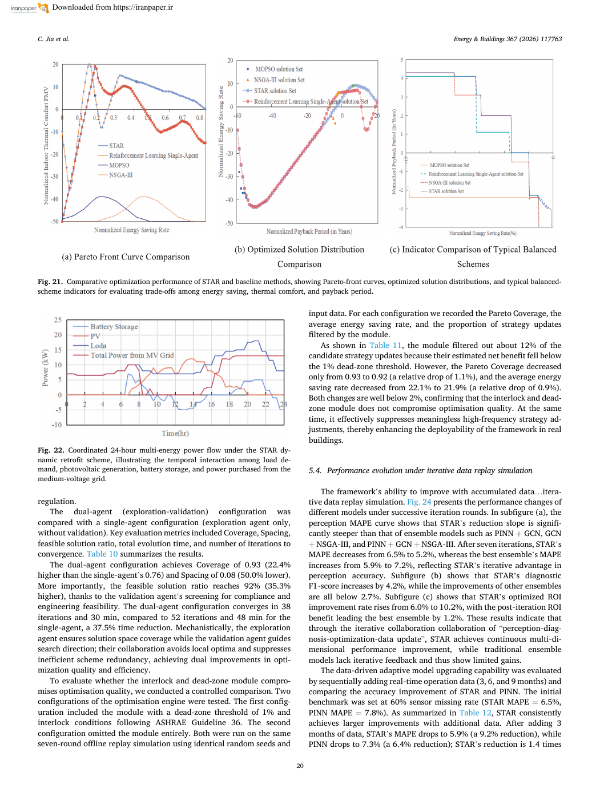
How to read this figureراهنمای خواندن شکل
Check the axes, units, panel labels and the caption’s definition of better performance. Compare methods under the stated conditions; keep uncertainty, tradeoffs and normalization separate from headline gains.محور، واحد، پنل و تعریف عملکرد بهتر در عنوان را بررسی کنید. روشها را در شرایط بیانشده مقایسه و عدمقطعیت، مصالحه و نرمالسازی را از بهبود شاخص اصلی جدا نگه دارید.
Reader guidance · not an additional author claimراهنمای مطالعه · ادعای اضافی نویسنده نیستWhat this figure showsاین شکل چه نشان میدهد؟
Pareto fronts and solution distributions compare STAR, NSGA-III, MOPSO and PPO.جبهه پارتو وتوزیع راهحلSTARوNSGA-IIIوMOPSOوPPOرامقایسه میکند.
Reported values & evidence limitsمقادیر گزارششده و حدود شواهد
Reported Pareto coverage.93; typical 22%saving and 3.2-year payback.پوشش پارتو۰٫۹۳،صرفهجویی نمونه۲۲٪وبازگشت۳٫۲سال گزارش شده.
Figure 22
Source visualتصویر منبعHow to read this figureراهنمای خواندن شکل
Read the original labels and caption first, then use the explanation and evidence note below. Printed quantities are preserved separately from reviewer interpretation.ابتدا برچسبها و عنوان اصلی را بخوانید و سپس توضیح و یادداشت شاهد را بررسی کنید. مقدار چاپشده از تفسیر مرورگر جدا نگه داشته شده است.
Reader guidance · not an additional author claimراهنمای مطالعه · ادعای اضافی نویسنده نیستWhat this figure showsاین شکل چه نشان میدهد؟
A 24 hourmulti-energy flow illustrates coordination under the dynamic scheme.جریان۲۴ساعته چندانرژی هماهنگی راهبردپویا رانشان میدهد.
Reported values & evidence limitsمقادیر گزارششده و حدود شواهد
Modelled power trajectories have no new sample values inferred here.مسیرتوان مدلشده است؛مقدار نمونه تازه حدس زده نشده.
Figure 23
Time & behaviorزمان و رفتار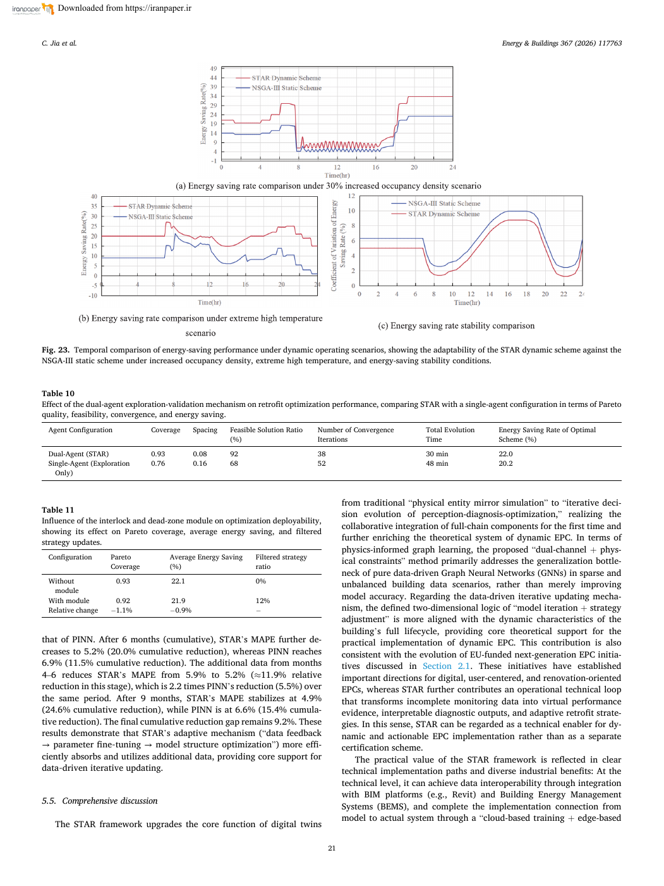
How to read this figureراهنمای خواندن شکل
Read the time window and units before comparing traces. Match each curve to its legend and the same operating conditions; unlabeled samples are not numerical measurements extracted by this report.پیش از مقایسه مسیرها، بازه زمان و واحدها را بخوانید. هر منحنی را به راهنما و شرایط یکسان وصل کنید؛ نمونه بدون برچسب، اندازهگیری عددی استخراجشده در این گزارش نیست.
Reader guidance · not an additional author claimراهنمای مطالعه · ادعای اضافی نویسنده نیستWhat this figure showsاین شکل چه نشان میدهد؟
Dynamic/static scheme saving trajectories compare adaptation over operating scenarios.مسیرصرفهجویی طرح پویا/ایستا انطباق درسناریوهارامقایسه میکند.
Reported values & evidence limitsمقادیر گزارششده و حدود شواهد
The text reports 20–21%savings in dynamic scenarios; these are simulation outcomes.متن۲۰تا۲۱٪صرفهجویی درسناریوپویاگزارش میکند؛نتیجه شبیهسازی است.
Figure 24
Comparison & resultsمقایسه و نتایج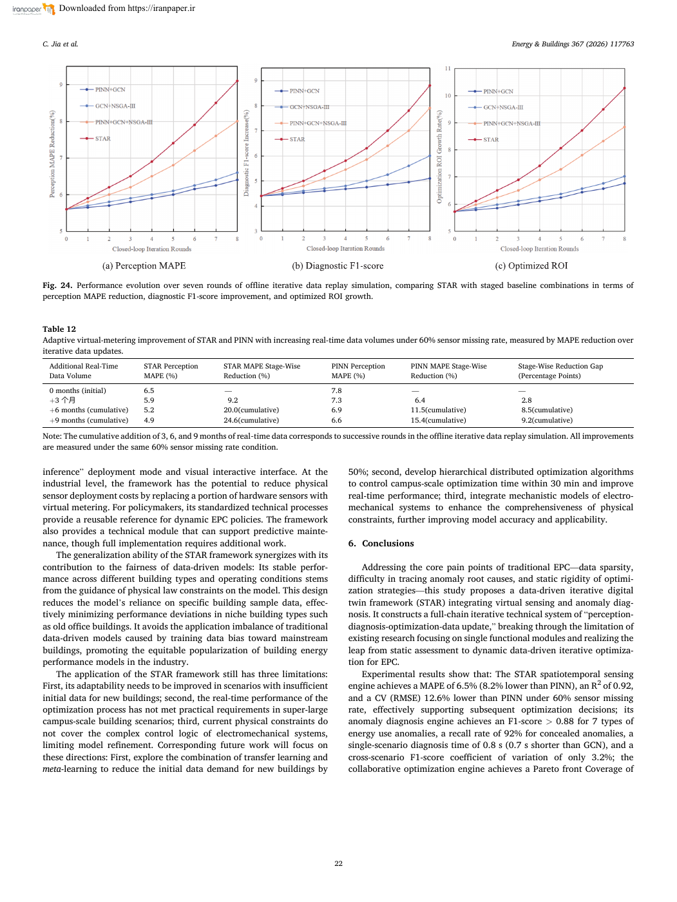
How to read this figureراهنمای خواندن شکل
Check the axes, units, panel labels and the caption’s definition of better performance. Compare methods under the stated conditions; keep uncertainty, tradeoffs and normalization separate from headline gains.محور، واحد، پنل و تعریف عملکرد بهتر در عنوان را بررسی کنید. روشها را در شرایط بیانشده مقایسه و عدمقطعیت، مصالحه و نرمالسازی را از بهبود شاخص اصلی جدا نگه دارید.
Reader guidance · not an additional author claimراهنمای مطالعه · ادعای اضافی نویسنده نیستWhat this figure showsاین شکل چه نشان میدهد؟
Seven replay rounds track sensing, diagnosis and optimized ROI evolution.هفت دوربازپخش تحول ادراک،تشخیص وROIرادنبال میکند.
Reported values & evidence limitsمقادیر گزارششده و حدود شواهد
MAPE 6.5→5.2%, diagnostic F 1 about+4.2%, ROI 10.2%as reported.MAPEاز۶٫۵به۵٫۲٪،F1حدود۴٫۲٪افزایش وROI۱۰٫۲٪گزارش شده.
Figure B1
Comparison & resultsمقایسه و نتایج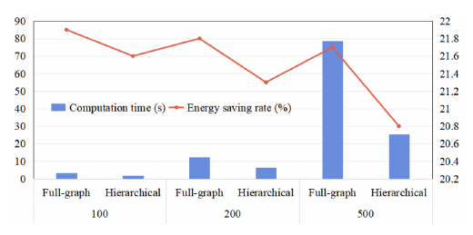
How to read this figureراهنمای خواندن شکل
Check the axes, units, panel labels and the caption’s definition of better performance. Compare methods under the stated conditions; keep uncertainty, tradeoffs and normalization separate from headline gains.محور، واحد، پنل و تعریف عملکرد بهتر در عنوان را بررسی کنید. روشها را در شرایط بیانشده مقایسه و عدمقطعیت، مصالحه و نرمالسازی را از بهبود شاخص اصلی جدا نگه دارید.
Reader guidance · not an additional author claimراهنمای مطالعه · ادعای اضافی نویسنده نیستWhat this figure showsاین شکل چه نشان میدهد؟
Hierarchical versus full-graph optimization tests campus graph sizes.بهینهسازی سلسلهمراتبی وگراف کامل اندازه محوطه رامقایسه میکند.
Reported values & evidence limitsمقادیر گزارششده و حدود شواهد
Authors report 45–68%time reduction,<5%relative saving loss;500 nodesabout 78→25 s.کاهش زمان۴۵تا۶۸٪،افت نسبی صرفهجویی زیر۵٪و۵۰۰گره حدود۷۸به۲۵ثانیه گزارش شده.
Figure B2
Comparison & resultsمقایسه و نتایج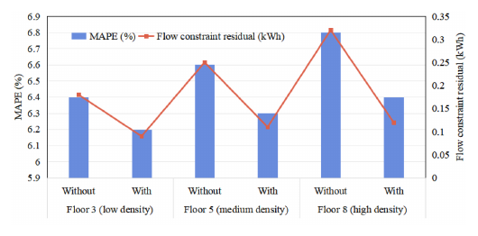
How to read this figureراهنمای خواندن شکل
Check the axes, units, panel labels and the caption’s definition of better performance. Compare methods under the stated conditions; keep uncertainty, tradeoffs and normalization separate from headline gains.محور، واحد، پنل و تعریف عملکرد بهتر در عنوان را بررسی کنید. روشها را در شرایط بیانشده مقایسه و عدمقطعیت، مصالحه و نرمالسازی را از بهبود شاخص اصلی جدا نگه دارید.
Reader guidance · not an additional author claimراهنمای مطالعه · ادعای اضافی نویسنده نیستWhat this figure showsاین شکل چه نشان میدهد؟
Adding VAV minimum/maximum flow physics tests extension of loss constraints.افزودن قیدکران دبیVAVگسترش زیانفیزیکی رامیسنجد.
Reported values & evidence limitsمقادیر گزارششده و حدود شواهد
Text reports MAPE−.2–.4 percentage points and flow residual−50–60%.متن کاهشMAPEبهاندازه۰٫۲تا۰٫۴واحددرصدوباقیمانده دبی۵۰تا۶۰٪رادارد.
Tables & numerical evidenceجدولها و شواهد عددی
Table 1 · Main outcomes of EU-funded next-generation EPC sister projects and their relevance to the STAR framework for sparse-data sensing, diagnosis, and adaptive retrofit optimization.جدول1:دادهها ومقایسههای منبع
Table 1 provides: Main outcomes of EU-funded next-generation EPC sister projects and their relevance to the STAR framework for sparse-data sensing, diagnosis, and adaptive retrofit optimization.. Preserve the complete printed rows, units, conditions and footnotes in the source view; selected relevant numerical results are explained in this report.جدول1دادههای اصلی رابههمراه واحد،شرط وپانویس ارائه میکند؛اعدادمرتبط دربخش نتایج توضیح داده شدهاند وتمام سطرهادرنمایمنبع حفظ شدهاند.
Table 1 · PDF p. 3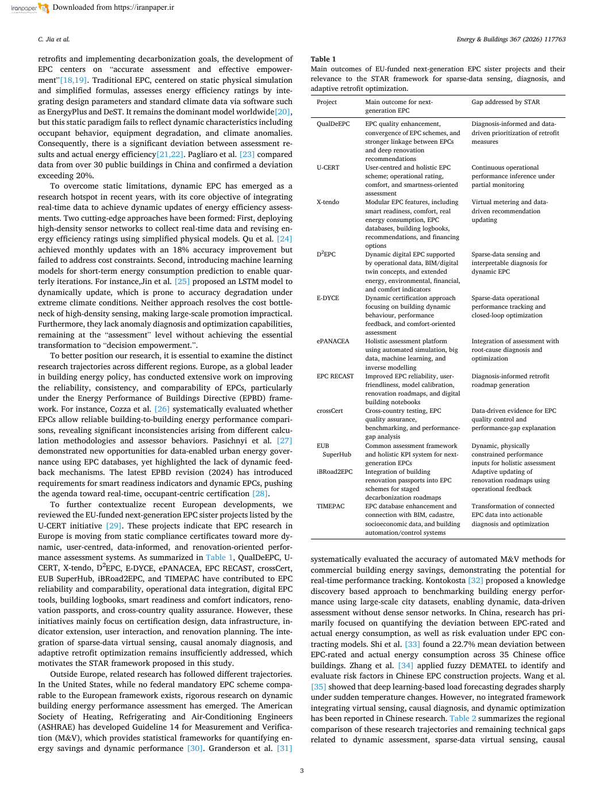
Table 2 · Regional comparison of EPC research trajectories and remaining technical gaps related to dynamic assessment, sparse-data virtual sensing, causal diagnosis, and retrofit optimization. Region Core Research Focus Representative Works Relevance to Our Frameworkجدول2:دادهها ومقایسههای منبع
Table 2 provides: Regional comparison of EPC research trajectories and remaining technical gaps related to dynamic assessment, sparse-data virtual sensing, causal diagnosis, and retrofit optimization. Region Core Research Focus Representative Works Relevance to Our Framework. Preserve the complete printed rows, units, conditions and footnotes in the source view; selected relevant numerical results are explained in this report.جدول2دادههای اصلی رابههمراه واحد،شرط وپانویس ارائه میکند؛اعدادمرتبط دربخش نتایج توضیح داده شدهاند وتمام سطرهادرنمایمنبع حفظ شدهاند.
Table 2 · PDF p. 4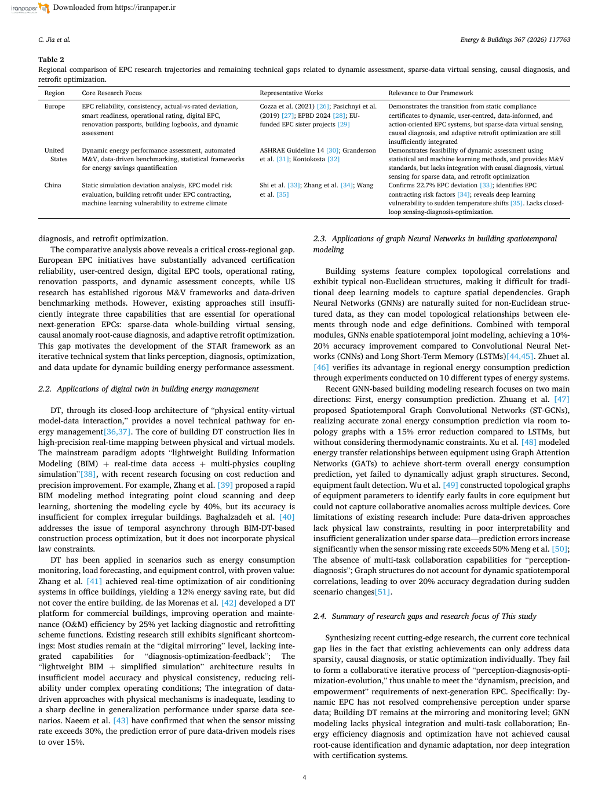
Table 3 · Multi-source data specifications of the ASHRAE GEP III public dataset and the real office building case used for sparse-monitoring validation of the STAR framework. Dimension Sub-item ASHRAE GEP III (public dataset) Real office building case Building information Type Office Officeجدول3:دادهها ومقایسههای منبع
Table 3 provides: Multi-source data specifications of the ASHRAE GEP III public dataset and the real office building case used for sparse-monitoring validation of the STAR framework. Dimension Sub-item ASHRAE GEP III (public dataset) Real office building case Building information Type Office Office. Preserve the complete printed rows, units, conditions and footnotes in the source view; selected relevant numerical results are explained in this report.جدول3دادههای اصلی رابههمراه واحد،شرط وپانویس ارائه میکند؛اعدادمرتبط دربخش نتایج توضیح داده شدهاند وتمام سطرهادرنمایمنبع حفظ شدهاند.
Table 3 · PDF p. 11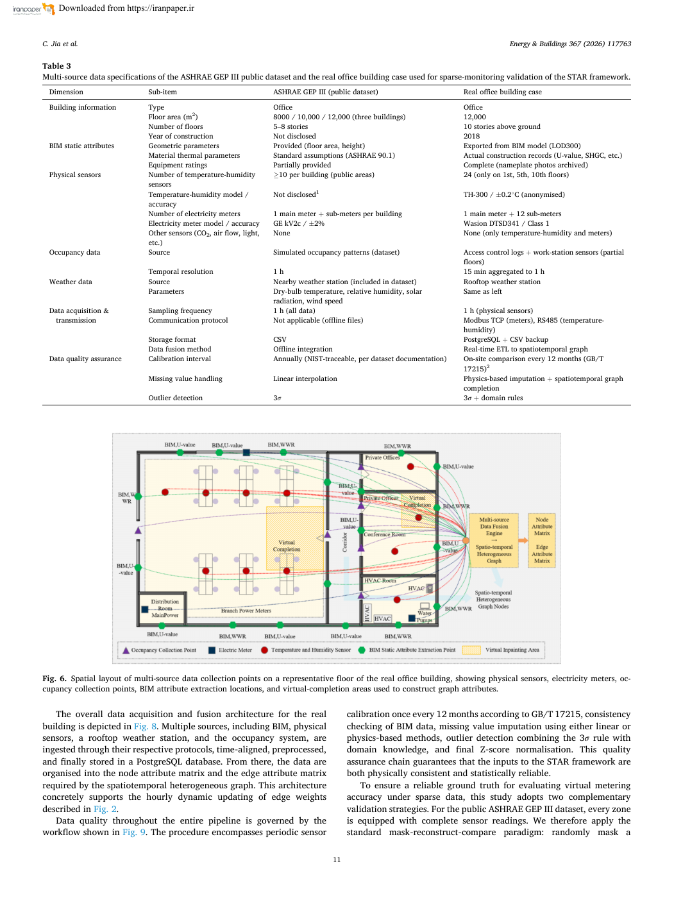
Table 4 · Comparative virtual-metering accuracy of STAR and baseline models under 20%–80% sensor missing rates, evaluated using RMSE, MAPE, CV(RMSE), and R 2. Evaluation Metric Sensor Missing Rate STAR EnergyPlus CNN-LSTM STGCN GAT PINN RMSE (kWh) 20% 0.52 ± 0.02 0.78 ± 0.05 0.69 ± 0.04 0.65 ± 0.04 0.63 ± 0.03 0.58 ± 0.03جدول4:دادهها ومقایسههای منبع
Table 4 provides: Comparative virtual-metering accuracy of STAR and baseline models under 20%–80% sensor missing rates, evaluated using RMSE, MAPE, CV(RMSE), and R 2. Evaluation Metric Sensor Missing Rate STAR EnergyPlus CNN-LSTM STGCN GAT PINN RMSE (kWh) 20% 0.52 ± 0.02 0.78 ± 0.05 0.69 ± 0.04 0.65 ± 0.04 0.63 ± 0.03 0.58 ± 0.03. Preserve the complete printed rows, units, conditions and footnotes in the source view; selected relevant numerical results are explained in this report.جدول4دادههای اصلی رابههمراه واحد،شرط وپانویس ارائه میکند؛اعدادمرتبط دربخش نتایج توضیح داده شدهاند وتمام سطرهادرنمایمنبع حفظ شدهاند.
Table 4 · PDF p. 14Table 5 · Cross-floor validation results for virtual metering in the real office building under partial sensor masking, using MAPE, RMSE, and R 2 as evaluation metrics. Trainingجدول5:دادهها ومقایسههای منبع
Table 5 provides: Cross-floor validation results for virtual metering in the real office building under partial sensor masking, using MAPE, RMSE, and R 2 as evaluation metrics. Training. Preserve the complete printed rows, units, conditions and footnotes in the source view; selected relevant numerical results are explained in this report.جدول5دادههای اصلی رابههمراه واحد،شرط وپانویس ارائه میکند؛اعدادمرتبط دربخش نتایج توضیح داده شدهاند وتمام سطرهادرنمایمنبع حفظ شدهاند.
Table 5 · PDF p. 14Table 6 · Ablation analysis of the STAR spatiotemporal sensing engine under 60% sensor missing rate, showing the contributions of explicit topology, implicit correlation, physical constraints, and temporal modeling. Model Configuration RMSE (kWh) MAPE (%) CV(RMSE) (%) R 2 Physical Constraint Residual 24 h Short-Term Prediction MAPE (%)جدول6:دادهها ومقایسههای منبع
Table 6 provides: Ablation analysis of the STAR spatiotemporal sensing engine under 60% sensor missing rate, showing the contributions of explicit topology, implicit correlation, physical constraints, and temporal modeling. Model Configuration RMSE (kWh) MAPE (%) CV(RMSE) (%) R 2 Physical Constraint Residual 24 h Short-Term Prediction MAPE (%). Preserve the complete printed rows, units, conditions and footnotes in the source view; selected relevant numerical results are explained in this report.جدول6دادههای اصلی رابههمراه واحد،شرط وپانویس ارائه میکند؛اعدادمرتبط دربخش نتایج توضیح داده شدهاند وتمام سطرهادرنمایمنبع حفظ شدهاند.
Table 6 · PDF p. 15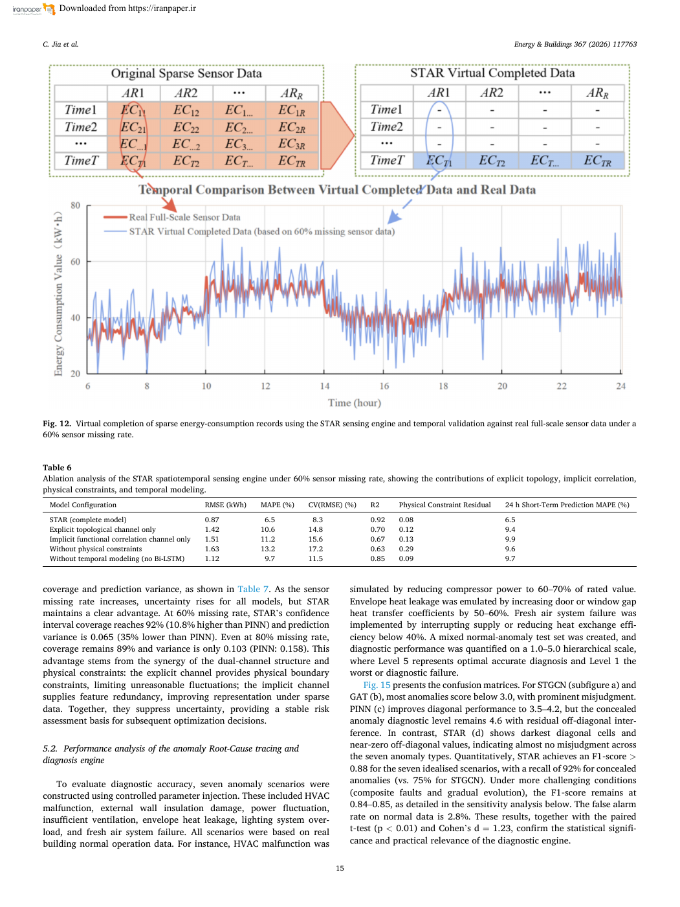
Table 8 · Average diagnostic time per anomaly scenarioزمان میانگین تشخیص
The original average diagnostic time per anomaly scenario are retained with all rows and units in the source view. The report discusses selected numerical comparisons in context.زمان میانگین تشخیصبههمراه تمام سطرها وواحدها درصفحه اصلی حفظ شده است؛مقایسه عددی منتخب درگزارش توضیح داده میشود.
Table 8 · PDF p. 18Table 7 · Prediction uncertainty comparison of STAR and baseline models under different sensor missing rates, quantified by 95% confidence interval coverage and pre- diction variance.جدول7:دادهها ومقایسههای منبع
Table 7 provides: Prediction uncertainty comparison of STAR and baseline models under different sensor missing rates, quantified by 95% confidence interval coverage and pre- diction variance.. Preserve the complete printed rows, units, conditions and footnotes in the source view; selected relevant numerical results are explained in this report.جدول7دادههای اصلی رابههمراه واحد،شرط وپانویس ارائه میکند؛اعدادمرتبط دربخش نتایج توضیح داده شدهاند وتمام سطرهادرنمایمنبع حفظ شدهاند.
Table 7 · PDF p. 16Table 9 · Multi-objective retrofit optimization performance of STAR and baseline opti- mizers, comparing Pareto-front quality and typical balanced schemes in terms of energy saving, ROI, payback period, and comfort compliance.جدول9:دادهها ومقایسههای منبع
Table 9 provides: Multi-objective retrofit optimization performance of STAR and baseline opti- mizers, comparing Pareto-front quality and typical balanced schemes in terms of energy saving, ROI, payback period, and comfort compliance.. Preserve the complete printed rows, units, conditions and footnotes in the source view; selected relevant numerical results are explained in this report.جدول9دادههای اصلی رابههمراه واحد،شرط وپانویس ارائه میکند؛اعدادمرتبط دربخش نتایج توضیح داده شدهاند وتمام سطرهادرنمایمنبع حفظ شدهاند.
Table 9 · PDF p. 19Table 10 · Effect of the dual-agent exploration-validation mechanism on retrofit optimization performance, comparing STAR with a single-agent configuration in terms of Pareto quality, feasibility, convergence, and energy saving. Agent Configuration Coverage Spacing Feasible Solution Ratioجدول10:دادهها ومقایسههای منبع
Table 10 provides: Effect of the dual-agent exploration-validation mechanism on retrofit optimization performance, comparing STAR with a single-agent configuration in terms of Pareto quality, feasibility, convergence, and energy saving. Agent Configuration Coverage Spacing Feasible Solution Ratio. Preserve the complete printed rows, units, conditions and footnotes in the source view; selected relevant numerical results are explained in this report.جدول10دادههای اصلی رابههمراه واحد،شرط وپانویس ارائه میکند؛اعدادمرتبط دربخش نتایج توضیح داده شدهاند وتمام سطرهادرنمایمنبع حفظ شدهاند.
Table 10 · PDF p. 21Table 11 · Influence of the interlock and dead-zone module on optimization deployability, showing its effect on Pareto coverage, average energy saving, and filtered strategy updates.جدول11:دادهها ومقایسههای منبع
Table 11 provides: Influence of the interlock and dead-zone module on optimization deployability, showing its effect on Pareto coverage, average energy saving, and filtered strategy updates.. Preserve the complete printed rows, units, conditions and footnotes in the source view; selected relevant numerical results are explained in this report.جدول11دادههای اصلی رابههمراه واحد،شرط وپانویس ارائه میکند؛اعدادمرتبط دربخش نتایج توضیح داده شدهاند وتمام سطرهادرنمایمنبع حفظ شدهاند.
Table 11 · PDF p. 21Table 12 · Adaptive virtual-metering improvement of STAR and PINN with increasing real-time data volumes under 60% sensor missing rate, measured by MAPE reduction over iterative data updates. Additional Real-Timeجدول12:دادهها ومقایسههای منبع
Table 12 provides: Adaptive virtual-metering improvement of STAR and PINN with increasing real-time data volumes under 60% sensor missing rate, measured by MAPE reduction over iterative data updates. Additional Real-Time. Preserve the complete printed rows, units, conditions and footnotes in the source view; selected relevant numerical results are explained in this report.جدول12دادههای اصلی رابههمراه واحد،شرط وپانویس ارائه میکند؛اعدادمرتبط دربخش نتایج توضیح داده شدهاند وتمام سطرهادرنمایمنبع حفظ شدهاند.
Table 12 · PDF p. 22Table B1 · Transfer fine-tuning data volume versus MAPEداده تنظیم انتقالی وMAPE
The original transfer fine-tuning data volume versus mape are retained with all rows and units in the source view. The report discusses selected numerical comparisons in context.داده تنظیم انتقالی وMAPEبههمراه تمام سطرها وواحدها درصفحه اصلی حفظ شده است؛مقایسه عددی منتخب درگزارش توضیح داده میشود.
Table B1 · PDF p. 25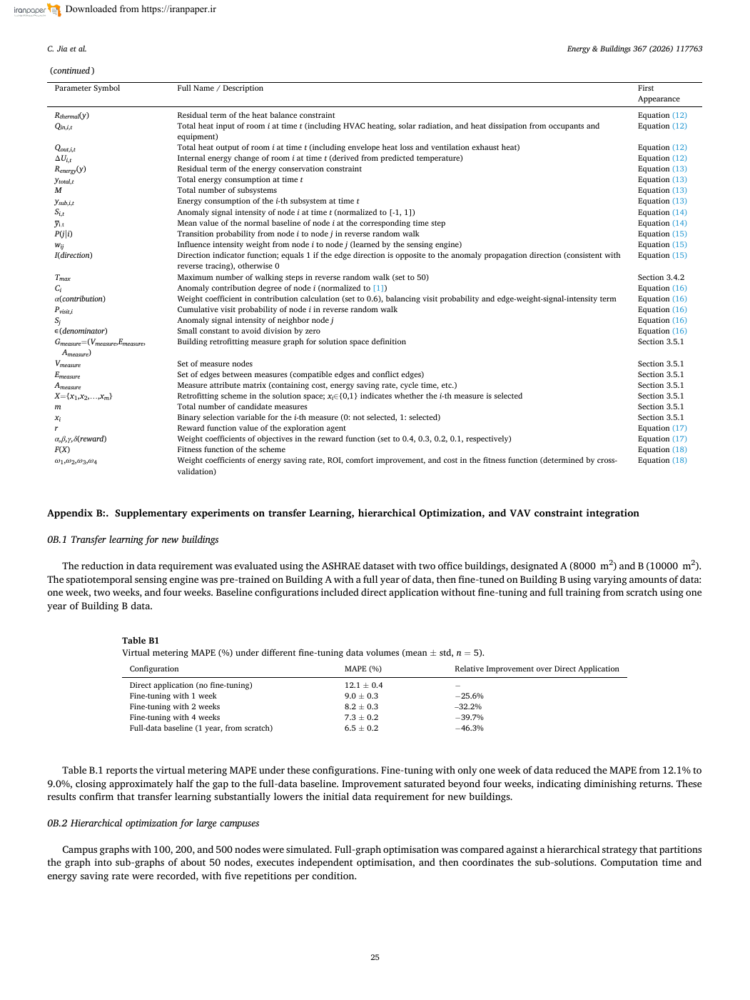
Critical analysis — reviewer assessmentتحلیل انتقادی — ارزیابی مرورگر
Ci is a contribution-ranking construction, not a calibrated joint-cause posterior. Do not import top 3 contributions as probabilities into our SCM. Offline replay improvements cannot establish observed recovery after real interventions.Ci رتبه سهم است و پسین کالیبره علتهای مشترک نیست؛ آن را احتمال SCM فرض نکنیم. بهبود بازپخش، بازیابی مشاهدهشده پس از مداخله واقعی را ثابت نمیکند. Source · PDF p. 9Source · PDF p. 23
Role in our researchنقش مقاله در پژوهش ما
Why is it important to our research?چرا برای پژوهش ما مهم است؟
Closest architectural collision for a perception–diagnosis–optimization–update cycle; forces our novelty to be more specific than adaptive Twin plus diagnosis.نزدیکترین همپوشانی معماری چرخه ادراک–تشخیص–بهینهسازی–بهروزرسانی است و ادعای نوآوری ما را دقیقتر میکند. Source · PDF p. 5Source · PDF p. 23
What does it contribute to our research?چه سهمی در پژوهش ما دارد؟
Provides concrete graph/Twin interfaces, sparse-evidence tests, graph-attribution alternative and an offline-replay evaluation pattern.رابط گراف/Twin، آزمون شاهد ناقص، جایگزین انتساب گرافی و الگوی ارزیابی بازپخش فراهم میکند. Source · PDF p. 5Source · PDF p. 7Source · PDF p. 8Source · PDF p. 13
How can we employ it?چگونه از آن استفاده کنیم؟
Use as a design and validity comparator for versioned Twin updates; compare graph attribution with uncertainty-aware causal diagnosis on matched scenarios. Keep evaluator recovery distinct from Twin-predicted savings.برای طراحی و اعتبار بهروزرسانی نسخهدار Twin و مقایسه انتساب گرافی با تشخیص علّی نامطمئن استفاده شود؛ بازیابی محیط از صرفهجویی پیشبینی Twin جدا بماند. Source · PDF p. 8Source · PDF p. 22Source · PDF p. 23
Should we implement it as a baseline?آیا باید آن را بهعنوان خطمبنا پیاده کنیم؟
Conditional adapted diagnostic/Twin ablation, not a mandatory whole-system reproduction: its office graph and capital retrofit optimization do not match residential hourly operations. Prioritize core diagnosis/recovery ablations first.خطمبنای اقتباسی تشخیص/Twin بهصورت مشروط است، نه بازتولید اجباری کامل؛ گراف اداری و بازسازی سرمایهای با عملیات ساعتی مسکونی متفاوتاند. Source · PDF p. 9Source · PDF p. 19Source · PDF p. 23
Original source pagesصفحات اصلی منبع
PDF page 1
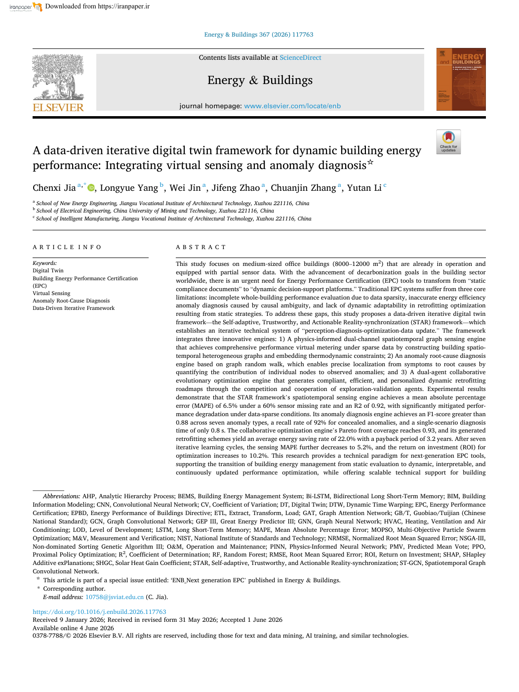
PDF page 2
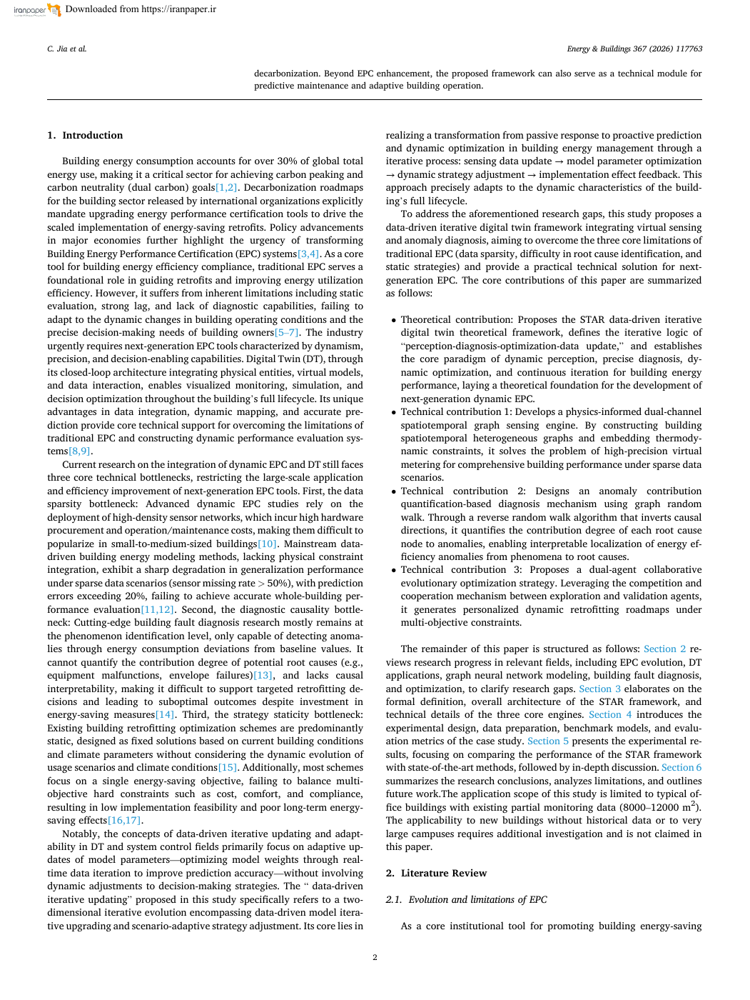
PDF page 5
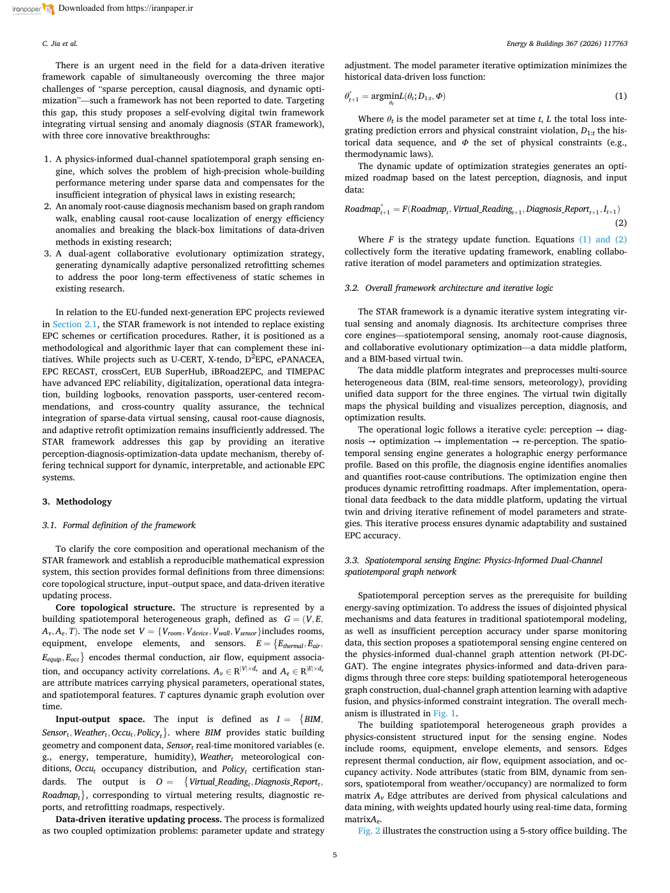
PDF page 6
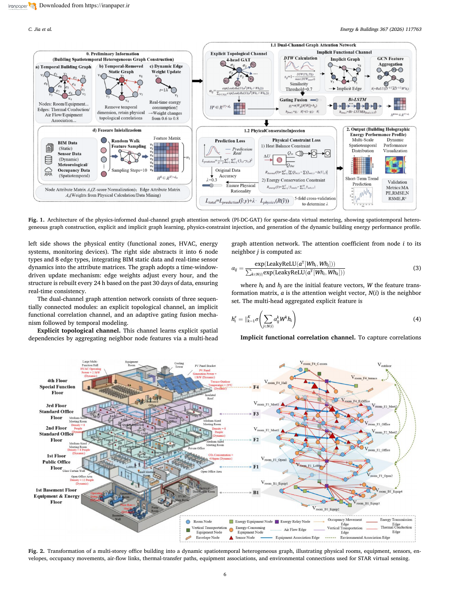
PDF page 7
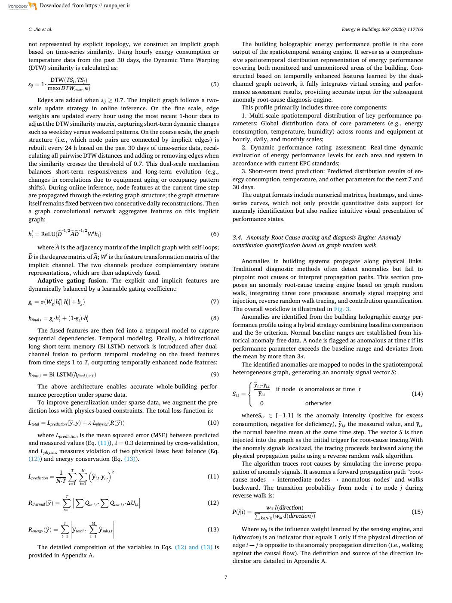
PDF page 8
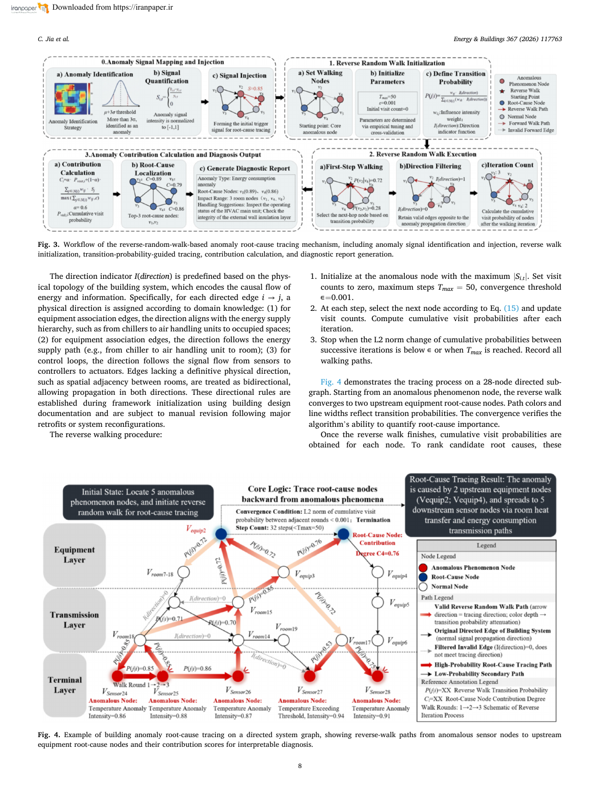
PDF page 9
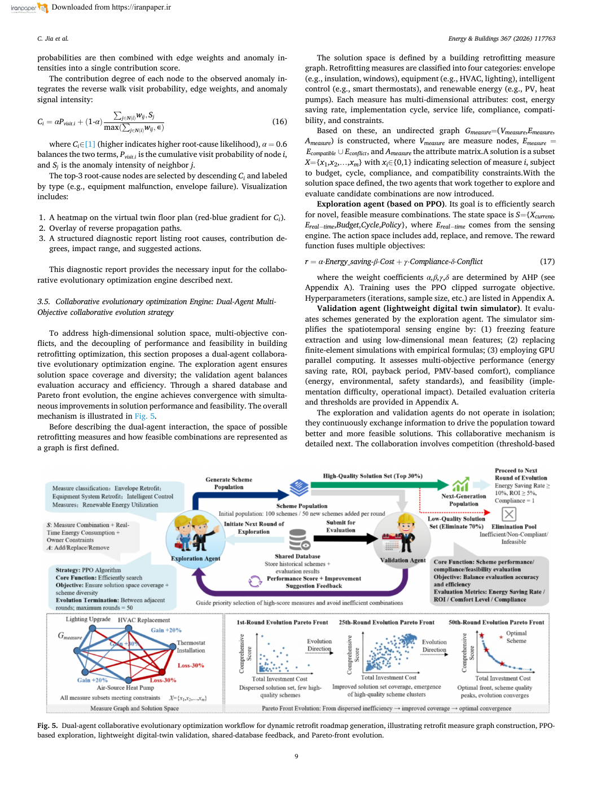
PDF page 10
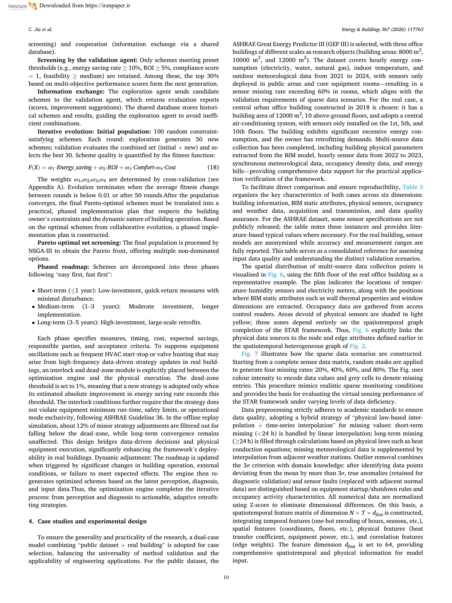
PDF page 13
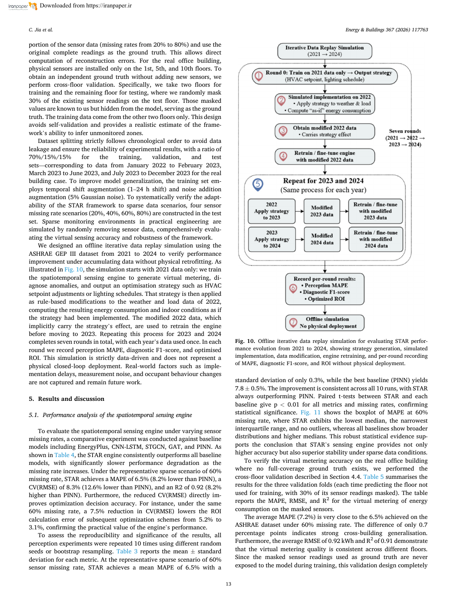
PDF page 23
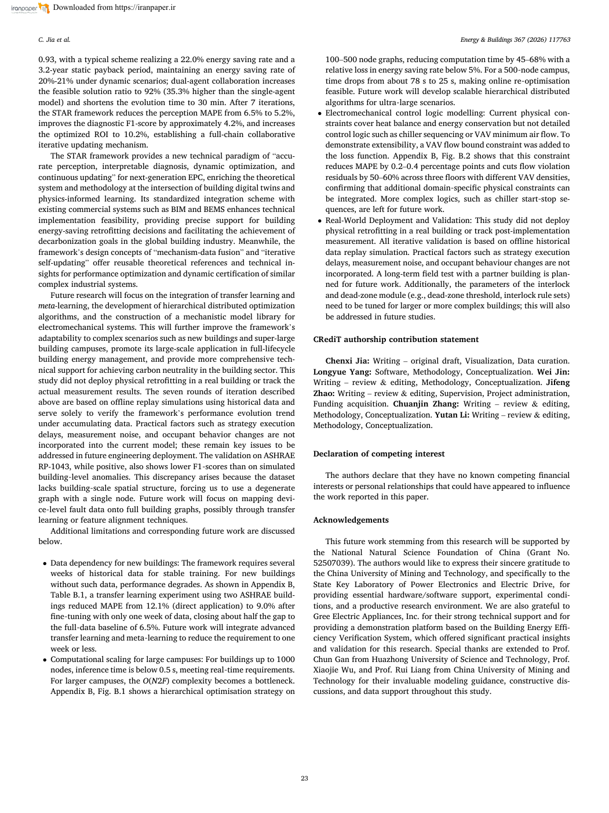
PDF page 24
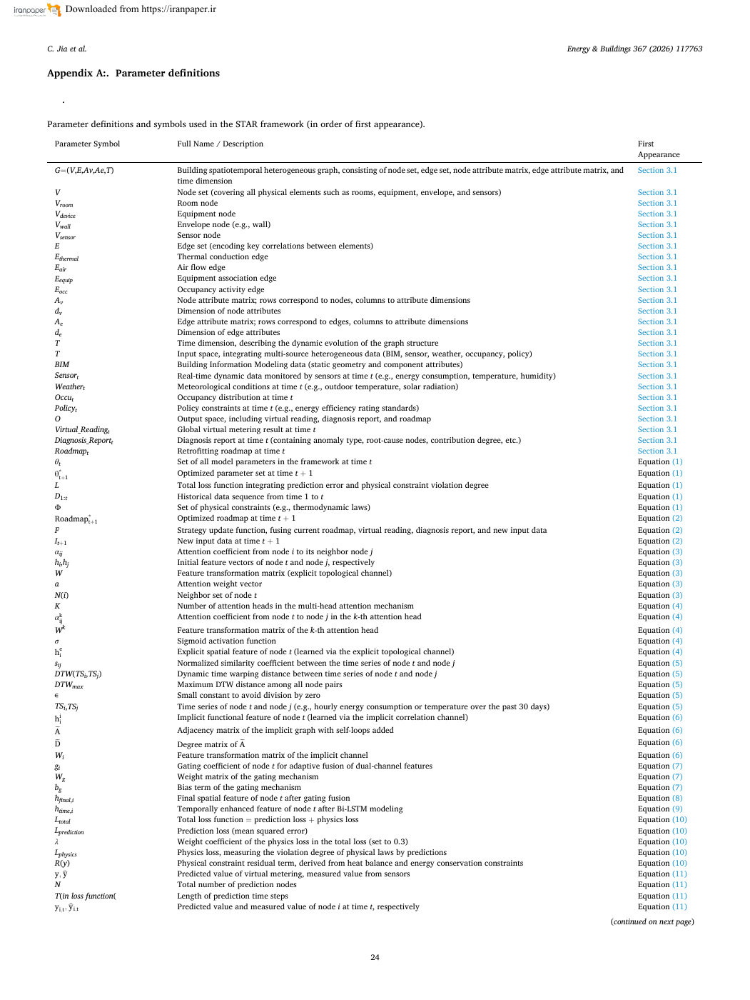
PDF page 26
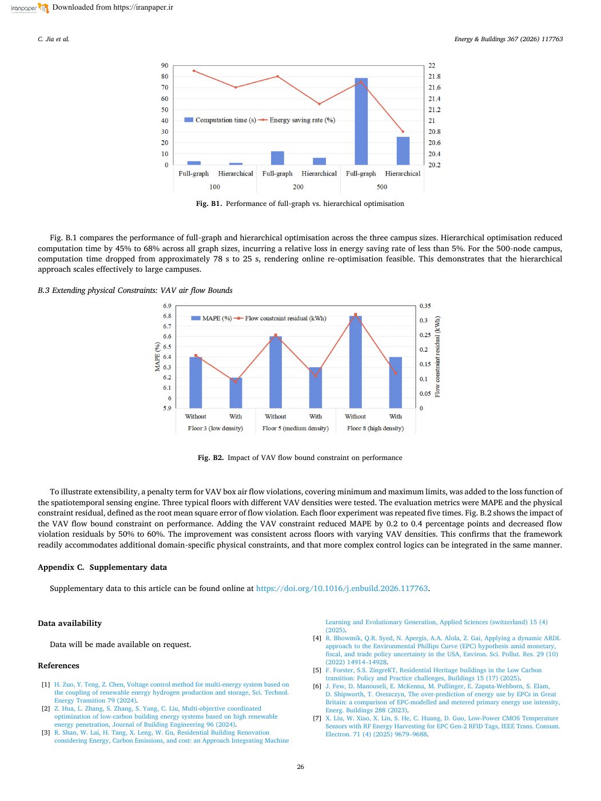
PDF page 27
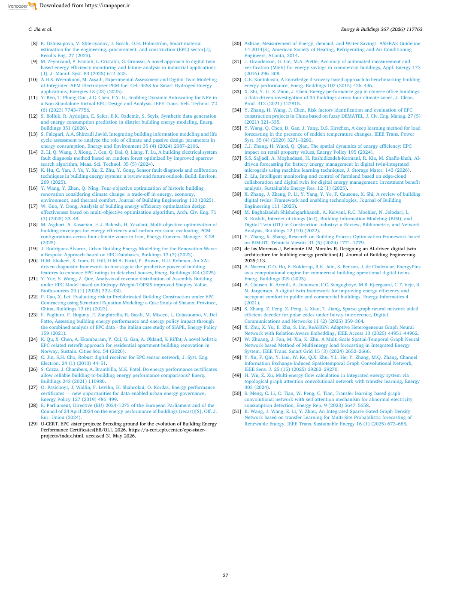
Full bibliographyکتابنامه کامل
Full bibliography transcribed from the source PDF. Original reference pages are the authority for formatting and extraction ambiguities; cited works were not independently analyzed just because they appear here.کتابنامه کامل از PDF منبع استخراج شده است. صفحه اصلی مرجع نگارش و ابهام استخراج است؛ درج منبع به معنی تحلیل مستقل آن اثر نیست.